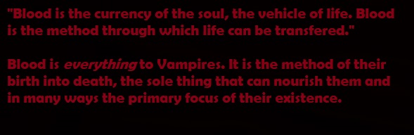

Character Creation - Part 2: Bloodlines

Your character will be born into a specific bloodline of Vampires. This bloodline defines the morphological traits of their vampiric condition and each bloodline also has their own unique culture.
These bloodlines are: The Bestia, The Noctis, The Mortis and The Imperators. Each has their own unique powers and weaknesses that impact what choices are available or will be successful in the narrative.
The Bestia: The Bestia are the origin of the archetype of the Vampire as a predator. They are naturally closer to the beast within and their powers and weakness shows that. They have the ability to take on aspects of animals, such as claws or enhanced eyes, and also have the ability to communicate with them. However their closeness to the beast means they have an even harder time controlling their bloodlust.
The Noctis: The Noctis are the origins of the imagery of Vampires being made of or capable of controlling shadows. An aristocratic bloodline that claims to hail from the abyss from before the earth was born. Their powers grant them control over shadows and the ability to summon strange creatures from the so-called "Abyss". However their weakness makes them weak to light of all sorts. Anything brighter than a candle can make it harder for them to use their powers.
The Mortem: The Mortem are masters of the art of Necromancy and have jealously guarded their secrets for millenia. They are capable of communing with and controlling the dead in a variety of ways and their bodies are highly resilient with the ability to form a dense bone-like armour to protect themselves. Their connection to the dead is shown in their weakness too. Their bites always kill through a variety of methods. Some can only tear chunks out of people with their fangs, some infect people with diseases when they feed, some inject people with a leathal venom etc. No matter the details their bite is almost always lethal no matter how little blood they drink.
The Imperators: The Imperators are the emodiment of the image of Vampires as aristocrats. They have claimed rulership over Vampire-kind since time immemorial and their powers reflect their tendency towards leadership. They can control the minds of those with weaker wills and project an aura to inspire their followers. However this belief in their rulership means challanges to their authority almost always risk them losing control.
So... what are you?
You are one of the...
Now you're Vampire is made. Are you ready to take a step into the world of shadows that lies beneath Las Vegas?
Be born into the night...